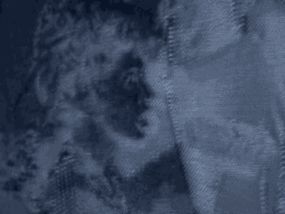

2 If possible we also would try to go to various
3 bombing crime scenes to have hands-on training at the scene in
4 terms of learning about how the bombs function, assisting in
5 the processing of the crime scene, collecting evidence from
6 the crime scene, and even conducting field examinations of the
7 evidence that was found at these crime scenes.
8 Q Can you tell us about your formal education.
9 A My formal education consists of some background in
10 forensic science and also in public administration. Most
11 recently, I graduated from the George Washington University
12 with a master's in forensic science, and previously I had
13 attended Indiana University, where I had earned a bachelor's
14 degree in forensic studies and master's degree in public
15 administration.
16 Q Have you attended seminars and conferences in the field of
17 forensics?
18 A Yes, I have.
19 Q You mentioned that you had been to crime scenes. Can you
20 tell us approximately how many bombing crime scenes you have
21 participated in in investigating?
22 A If I were to include our training seminars as well as
23 actual bombing crime scenes involving criminal activity, I
24 would venture probably in the neighborhood of 150 over the
25 course of my career.
2541
1 Q Among those 150 crime scenes, did some of them involve
2 suspected vehicle bombs?
3 A Yes, a number of them did.
4 Q Can you give us some examples?
5 A Most recently, in 1993 I was involved in the investigation
6 of the World Trade Center here in New York, and again in 1995
7 I was assigned to a similar crime scene in Riyadh, Saudi
8 Arabia. That involved the bombing of the office of personnel
9 management of the Saudi Arabian National Guard. Also in 1995
10 I had worked at the Oklahoma City bombing crime scene in the
11 spring of '95. In 1996 I had been involved in the
12 investigation of the TWA 800.
1